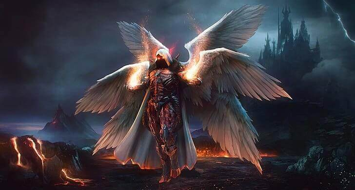

Angels are powerful celestial beings of light created by God and as of recently, the Nephilim Jack Kline, his grandson. They are responsible of maintaining Heaven and guard the souls of righteous humans. They power Heaven and at full potential they are imbued with considerable power. Angels also have connections to Prophets.
Angels are one of the most powerful entities in the series, generally outclassing most demons, monsters, ghosts, and other supernatural creatures with few exceptions.
Upon death, all angels are sent to a realm called The Empty, where they, along with all deceased demons, slumber for eternity.
It was recently revealed that due to the fall and the resulting fighting, angels are now an endangered species. In fact, there are less than a dozen left in Creation.
After Heaven was attacked by an entity called The Shadow, the angel, Duma overthrew Naomi, the current leader of Heaven at the time and took control. Duma manipulated Jack into turning a few humans into angels by taking their souls and forge them into angels, slightly increasing the number of angels until Castiel killed her.
Characteristics
As warriors of God and agents of fate, angels are extremely powerful beings in the supernatural world. They are superhuman beings superior to mortals in both power and intelligence. Their true spiritual forms or visages prove overwhelming to most mortals; however, some 'special' people can view their true visages without suffering lasting effects; demons also can't look at them in their true form without damaging their hosts. A key example of this: Pamela Barnes used her psychic powers to see the true form of Castiel and her eyes burned out as a result of her actions; human souls are able to see them in their true forms. Although not physically seen as they have no physical presence or being of their own, an angel's presence has been seen or manifested on earth as a brilliant white light (or a bluish luminous smoke if they have no wings). Respectively, angels in their true form do have large swan-like wings on their backs which can range in number anywhere from two to six. In Lazarus Rising, Castiel displays his wings through his shadow.
2. Archangels

Archangels are primordial angels that existed long before the creation of the Big Bang,[1] being looked at as Heaven's most fearsome wrath.[2] They were the first and strongest class of angels to be created, making them one of God's first creations. They were created in this order: Michael, Lucifer, Raphael, and Gabriel.
The creation order of the archangels is still disputed, after Amara suggests that Lucifer may actually be the first of the archangels.[3]
The angel Metatron was also considered to be an archangel by other angels until he revealed that he was simply a regular angel who was chosen to be the Scribe of God.
Characteristics
According to Castiel, they are known in Heaven as absolute, precise and wrathful creatures, as he has called them, "The most fearsome wrath of Heaven". Like all angels, their true forms are very intense, and have proven not only harmful but also fatal to humans, though Castiel also claimed that special humans can see their true forms. Their presence on Earth outside a vessel is often visualized as a blinding, pure white light, and their arrival can cause minor tremors, as shown by Lucifer when the Chapel shook as he escaped the Cage, and by Raphael while intervening to protect the prophet Chuck Shurley from Lilith. Their true voice also emits a piercing sound, which has proven to be excruciatingly painful to humans. During a subsequent appearance, Raphael caused the entire Eastern Sea Board to experience a black out and generated strong winds and heavy rainstorms. Shortly before his defeat, Lucifer's presence caused the temperature to drop drastically in Detroit.
It has been stated that Archangels are tethered to prophets. Raphael seemed to be the one who monitored and protected prophet Chuck Shurley. Before his fall, Lucifer was God's most beloved angel; he was considered beautiful, and was well respected in Heaven.
3. Pheonix
Phoenixes were powerful monsters who appeared human and were very rare in existence, so rare that, much like dragons, they were believed to be mythical even by veteran hunters like Bobby Singer or Samuel Colt.
Characteristics
They have the power to burn anyone into ash with a simple touch of its hand. Even though a Phoenix is immortal and powerful, it's still vulnerable to iron like many other supernatural creatures.
Like most monsters, a Phoenix could be killed by being shot with the Colt. They would combust upon death and their ashes were able to kill Eve, the Mother of All.
4. Banshee
A banshee (/ˈbænʃiː/ BAN-shee; Modern Irish bean sí, from Old Irish: ben síde [bʲen ˈʃiːðʲe], "woman of the fairy mound" or "fairy woman") is a female spirit in Irish folklore who heralds the death of a family member,[1] usually by screaming, wailing, shrieking, or keening. Her name is connected to the mythologically important tumuli or "mounds" that dot the Irish countryside, which are known as síde (singular síd) in Old Irish.[2]
Characteristics
Malevolent banshees look like a female with dark flowing hair, sunken eyes in robes. Their body is covered with dark mist. They also emit a glow from their mouths. Like ghosts, they emit strong electromagnetism, which causes lights to flicker when they approach; accordingly, EMF meters are highly responsive in rooms where a banshee was recently present.
Malevolent banshees are able to produce high-pitched screams that can drive anyone who hears their scream to commit suicide. The only ones capable of hearing their screams are the victims and once the victim is dead, the banshee will feed on their frontal lobe. Banshees only prey on the vulnerable, both physically and emotionally, only hunt at night and hunt a location until it is picked clean before moving on.
Benevolent banshees are tied to fairy lore and cry out to warn of impending death.